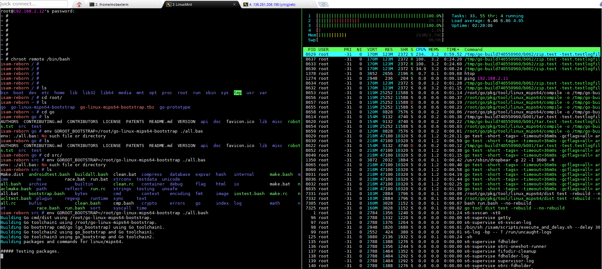
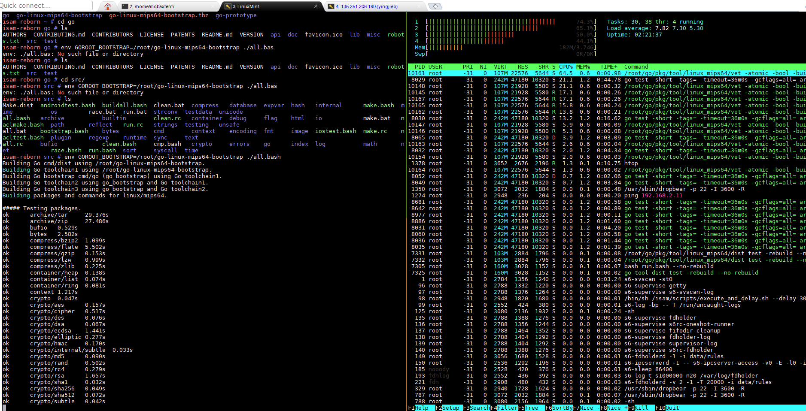
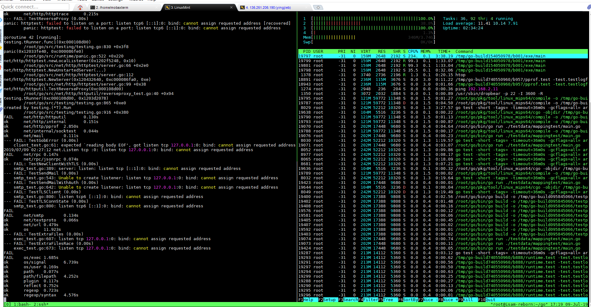

1. 准备环境
- 从以下地址下载stage3: 2014是最后更新的, 说明mips已经5年没人更新了. http://distfiles.gentoo.org/experimental/mips/stages/mips64/2014
- git clone portage库 https://anongit.gentoo.org/git/repo/gentoo.git
#在mint虚拟机上, 打开相关服务和转发
sudo sysctl -w net.ipv4.ip_forward=1
sudo iptables -t nat -A POSTROUTING -j MASQUERADE -s 192.168.2.12/32 -o enp0s10
cat /etc/exports
/home/yingjieb/work 192.168.2.0/24(rw,sync,insecure,no_subtree_check,no_root_squash,fsid=0)
sudo systemctl start nfs-kernel-server.service
#用root操作
sudo -s
cd ~/work/nfsroot
mkdir mipsroot
tar xvf stage3-mips64_multilib-20140904.tar.bz2 -C mipsroot
#把portage库拷到usr/portage, 带.git一起拷, 后面还要操作
cp -a gentoo.git mipsroot/usr/portage
#到mipsroot目录下操作, 这也是板子的rootfs
cd mipsroot
板子起到linux, 配好网络
#板子上操作, 192.168.2.11是mint的ip, 直连的
ifconfig agl0 192.168.2.12 up
ifconfig eth-mgnt 192.168.2.12 up
route add default gw 192.168.2.11
/etc/init.d/S50dropbear start
#mount nfs4
mkdir -p /root/remote
mount -t nfs4 192.168.2.11:nfsroot/mipsroot /root/remote -o nolock //nfsv4
mount 192.168.2.11:/home/yingjieb/work/nfsroot/mipsroot /root/remote -o nolock //nfsv3是这么写
#准备chroot
mount /dev/pts -o remount,gid=5
ln -s /proc/self/fd /dev/fd
cd /root
#mount
mount -o bind /dev remote/dev
mount -o bind /dev/pts remote/dev/pts
mount -o bind /proc remote/proc
mount -o bind /sys remote/sys
mount -o bind /run remote/run
#umount
umount remote/dev/pts
umount remote/dev
umount remote/proc
umount remote/sys
umount remote/run
umount remote
2. chroot
#最好ssh到板子操作
ssh root@192.168.2.12
chroot remote /bin/bash
#一次性操作
#网络
ping 135.245.48.34
route add default gw 192.168.2.11
echo "nameserver 172.24.213.251" > /etc/resolv.conf
#时间
date -s 20190705
#profile, 重要
cd /etc/portage
ln -sf ../../usr/portage/profiles/default/linux/mips/13.0/multilib/n64 make.profile
#一般操作
export http_proxy="http://135.245.48.34:8000"
export https_proxy=$http_proxy
export ftp_proxy=$http_proxy
export rsync_proxy=$http_proxy
# gentoo使用
#留core0跑网络
taskset -c 1,2,3 emerge -avtuDN @world
2.1. 更新Gentoo
#etc/portage/make.conf
GENTOO_MIRRORS="http://distfiles.gentoo.org/ http://bbgentoo.ilb.ru/"
3. build go toolchain
git clone go的源码:
git clone https://go.googlesource.com/go
go的toolchain编译包括两步:
- 先用go1.4编bootstrap
- 用bootstrap再编go高版本的编译器 这么做的原因是, go1.4是c写的, 以后的高版本编译器是go写的. 要编译 >1.4版本的编译器, 先要有go1.4编译器.
3.1. 先在x86上build bootstrap for mips
在mint机器上, 先编译go1.4
git clone https://go.googlesource.com/go $HOME/go1.4
cd $HOME/go1.4/src
git checkout release-branch.go1.4
./make.bash
再编译go1.12, 这个版本支持生成cross toolchain
git clone https://go.googlesource.com/go $HOME/go
cd $HOME/go/src
git checkout release-branch.go1.12
env GOROOT_BOOTSTRAP=$HOME/go1.4 ./make.bash
用go1.12编译target上的boot strap toolchain
#还是go1.12目录
cd $HOME/go/src
env GOOS=linux GOARCH=mips64 ./bootstrap.bash
#成功后, 会生成一个目录和一个压缩包
go-linux-mips64-bootstrap
go-linux-mips64-bootstrap.tbz
3.2. 后在板子上编译go toolchain
拷贝go-linux-mips64-bootstrap.tbz到板子上, 并解压
注意: cgo默认开启, 但需要板子上有gcc工具链, 以支持cgo
#正常应该git clone https://go.googlesource.com/go
#但我是在板子上, 没有git; 所以直接用nfs共享的
#cd到go 1.12源码go-mips64
cd go-mips64/src
#编译go 1.12 for mips64
#all.bash会做test, 有功能和性能的测试
env GOROOT_BOOTSTRAP=/root/go-linux-mips64-bootstrap ./all.bash
isam-reborn src # env GOROOT_BOOTSTRAP=/root/go-linux-mips64-bootstrap ./all.bash
Building Go cmd/dist using /root/go-linux-mips64-bootstrap.
Building Go toolchain1 using /root/go-linux-mips64-bootstrap.
Building Go bootstrap cmd/go (go_bootstrap) using Go toolchain1.
Building Go toolchain2 using go_bootstrap and Go toolchain1.
Building Go toolchain3 using go_bootstrap and Go toolchain2.
Building packages and commands for linux/mips64.
3.3. hello.go 和 cgotest.go
root@yingjieb-VirtualBox ~/work/nfsroot/mipsroot.go.ok/root
Linux Mint 19.1 Tessa # cat hello.go
package main
import "fmt"
func main() {
fmt.Println("Hello, World!")
fmt.Println("First go program on cfnt-b!")
}
root@yingjieb-VirtualBox ~/work/nfsroot/mipsroot.go.ok/root
Linux Mint 19.1 Tessa # cat cgotest.go
package main
//int Add(int a, int b){
// return a+b;
//}
import "C"
import "fmt"
func main() {
a := C.int(10)
b := C.int(20)
c := C.Add(a, b)
fmt.Println(c) // 30
}
4. go env
Linux Mint 19.1 Tessa # ls
bin go-linux-mips64 go-linux-mips64-bootstrap go-linux-mips64-bootstrap.tbz src
isam-reborn ~ # go env
GOARCH="mips64"
GOBIN=""
GOCACHE="/root/.cache/go-build"
GOEXE=""
GOFLAGS=""
GOHOSTARCH="mips64"
GOHOSTOS="linux"
GOOS="linux"
GOPATH="/root"
GOPROXY=""
GORACE=""
GOROOT="/root/go-linux-mips64"
GOTMPDIR=""
GOTOOLDIR="/root/go-linux-mips64/pkg/tool/linux_mips64"
GCCGO="gccgo"
GOMIPS64="hardfloat"
CC="gcc"
CXX="g++"
CGO_ENABLED="1"
GOMOD=""
CGO_CFLAGS="-g -O2"
CGO_CPPFLAGS=""
CGO_CXXFLAGS="-g -O2"
CGO_FFLAGS="-g -O2"
CGO_LDFLAGS="-g -O2"
PKG_CONFIG="pkg-config"
GOGCCFLAGS="-fPIC -mabi=64 -pthread -fmessage-length=0 -fdebug-prefix-map=/tmp/go-build357009098=/tmp/go-build -gno-record-gcc-switches"
5. 截图



参考: https://dave.cheney.net/2015/10/16/bootstrapping-go-1-5-on-non-intel-platforms